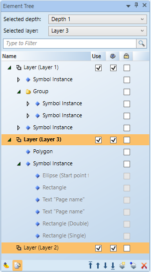

Element Tree View
The Element Tree displays all the layers and associated drawing elements of the selected graphic or symbol and also allows you to add or delete layers from the active graphic. Elements within a layer can be ordered using the positioning arrows at the bottom of the view.
Within the Element Tree you can also decide which layers, depths, or elements to display in Runtime or Design mode.

Element Tree | |
Field | Description |
Selected Depth | Select a depth whose layers and elements will display on the canvas. The depth of the topmost layer in the graphic is selected by default. |
Selected Layer | Select which layer is active on the canvas. You can copy an element from one layer and paste it onto any other layer in the tree. |
Type to Filter | Display layers, elements, and depths by the text entered. |
Name | Display the name of the layer, element, or group associated with the active graphic. You can enter and modify text in the Name field. The following information may be included: type, description, and text preview depending on how it was set up in the Property view. |
Use | If checked, the layer’s visibility is extended to Runtime mode and the Graphics Viewer. If unchecked, the layer is only visible in the Graphics Editor. |
| If checked, the layer is visible in any of the Graphic Editor modes. If unchecked, the layer or element is not visible in any of the modes. |
| Lock an element so that it cannot be selected or edited. |
| Click a layer or element from a layer and only see the associated content associated with that layer. |
| Display all associated elements with the graphic. |
Position | Change the element position in the display order. You can move an element to the top of the list, up a level at a time, down a level at a time, or to the bottom. |
| Create and insert a new layer in the active graphic and display it in the Element Tree. |
| Merge multiple selected layers into a single layer. The last layer selected absorbs the merged and their elements. |
| Delete the selected item from the Element Tree. |
 Visible
Visible Lock
Lock Hover Mode
Hover Mode Show All Elements
Show All Elements New Layer
New Layer Merge Layer
Merge Layer Delete
DeleteRelated Topics
For background information, see Configuring Elements.
For related procedures, see Working in the Element Tree View.